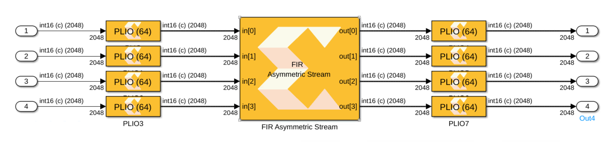
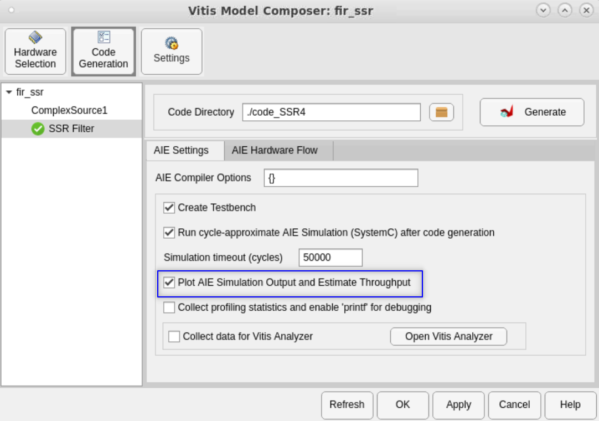

This example demonstrates using the AI Engine 'FIR Asymmetric Filter' block with a Super Sample Rate (SSR) of 4 in Vitis Model Composer to achieve a high throughput. We also compare the results to the Simulink FIR block for functional correctness.
Each stream input to the AI Engine FIR block has a thoughput of close to 1 GSPS for a total of 4 GSPS. To achieve this throughput the following factors are in play:

 To see the estimated throughput, we are setting the Vitis Model Composer Hub block as below before pushing the Generate button:
To see the estimated throughput, we are setting the Vitis Model Composer Hub block as below before pushing the Generate button:

 The input data is split over four ports, where each successive sample is sent to a different input port in a round-robin fashion.
The input data is split over four ports, where each successive sample is sent to a different input port in a round-robin fashion.
 The number of AI Engines used is equal to SSR^2 * CASC_LEN (in this case 4^2*1=16)
The number of AI Engines used is equal to SSR^2 * CASC_LEN (in this case 4^2*1=16)

Copyright 2022 Xilinx
Licensed under the Apache License, Version 2.0 (the "License");
you may not use this file except in compliance with the License.
You may obtain a copy of the License at
http://www.apache.org/licenses/LICENSE-2.0
Unless required by applicable law or agreed to in writing, software
distributed under the License is distributed on an "AS IS" BASIS,
WITHOUT WARRANTIES OR CONDITIONS OF ANY KIND, either express or implied.
See the License for the specific language governing permissions and
limitations under the License.